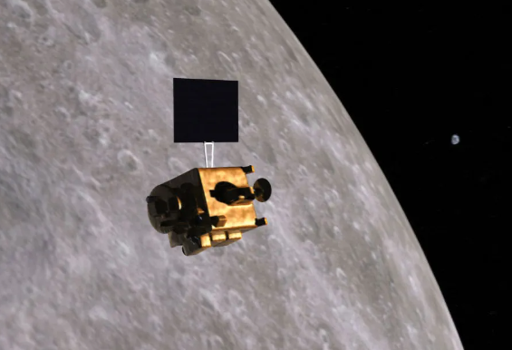

Chandrayaan 1 which means moon-craft was the first lunar probe under the programme chandrayaan. It was launched by the Indian Space Research Organisation (ISRO) in October 2008, and operated until August 2009. The mission was a major boost to India's space program, as India researched and developed indigenous technology to explore the Moon. The vehicle was inserted into lunar orbit on 8 November 2008.With an estimated cost for the project was ₹386 crore, it was intended to survey the lunar surface over a two-year period. But, After almost a year, the orbiter started experiencing several technical issues including failure of the star tracker and poor thermal shielding. Chandrayaan-1 stopped communicating at about 20:00 UTC on 28 August 2009, shortly after which the ISRO officially declared that the mission was over. Chandrayaan-1 operated for 312 days as opposed to the intended two years; however the mission achieved most of its scientific objectives including detecting presence of Lunar water.

On August 15, 2003, Indian Prime Minister Atal Bihari Vajpayee stated that the Chandrayaan 1 project was underway. The mission gave India's space programme a significant boost.In 1999, the Indian Academy of Sciences initially discussed the possibility of sending a research expedition to the Moon. The concept was furthered in 2000 by the Astronautical Society of India (ASI). The National Lunar trip Task Force was quickly established by the Indian Space Research Organisation (ISRO), which came to the conclusion that ISRO had the technological know-how to execute an Indian trip to the Moon.In April 2003, a Task Force recommendation to send an Indian probe to the Moon was discussed and approved by more than 100 eminent and renowned Indian scientists working in the fields of planetary and space sciences, Earth sciences, physics, chemistry, astronomy, and astrophysics. The Indian government approved the expedition in November, six months later.

1. High-resolution mineralogical and chemical imaging of the permanently shadowed north- and south-polar regions.
2. Searching for surface or sub-surface lunar water-ice, especially at the lunar poles.
3. Identification of chemicals in lunar highland rocks.
4. Mapping the height variation of features of the lunar surface.
5. Chemical stratigraphy of the lunar crust by remote sensing of the central uplands of large lunar craters, and of the South Pole Aitken Region (SPAR), an expected site of interior material.
6.Providing new insights in understanding the Moon's origin and evolution.
7. Observation of X-ray spectrum greater than 10 keV and stereographic coverage of most of the Moon's surface with 5 m (16 ft) resolution